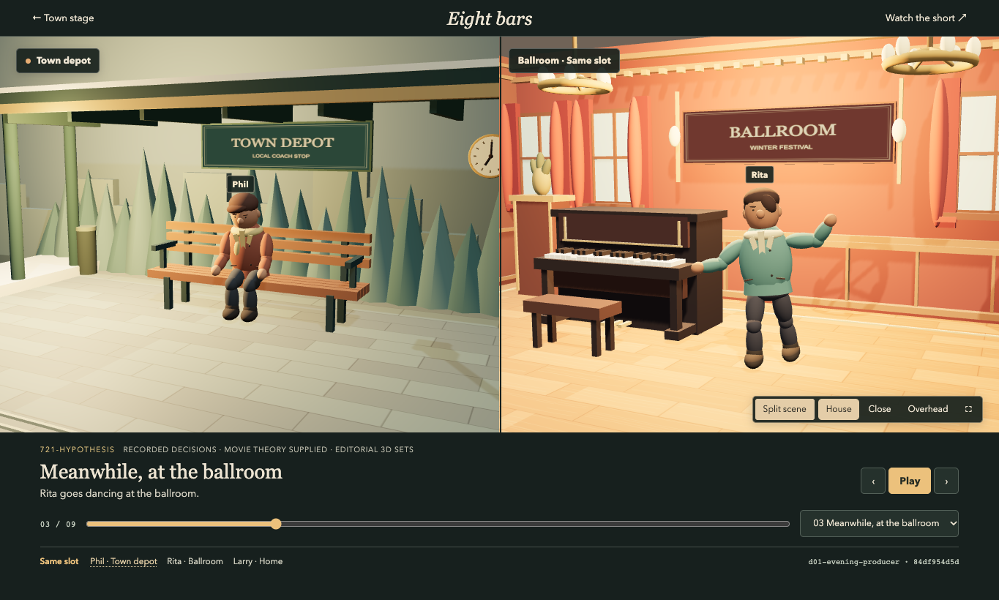

Change the evening
Phil thinks the right ending might get him to Wednesday. Give him the dance. See who still has to take the regional line.

That afternoon
At seven
Change any evening choice. Each result replays the town’s rules with the recorded afternoon held fixed.
Alma’s daughter
Six the next morning
- Clock always resets
- Tuesday
- Clock releases on delivery